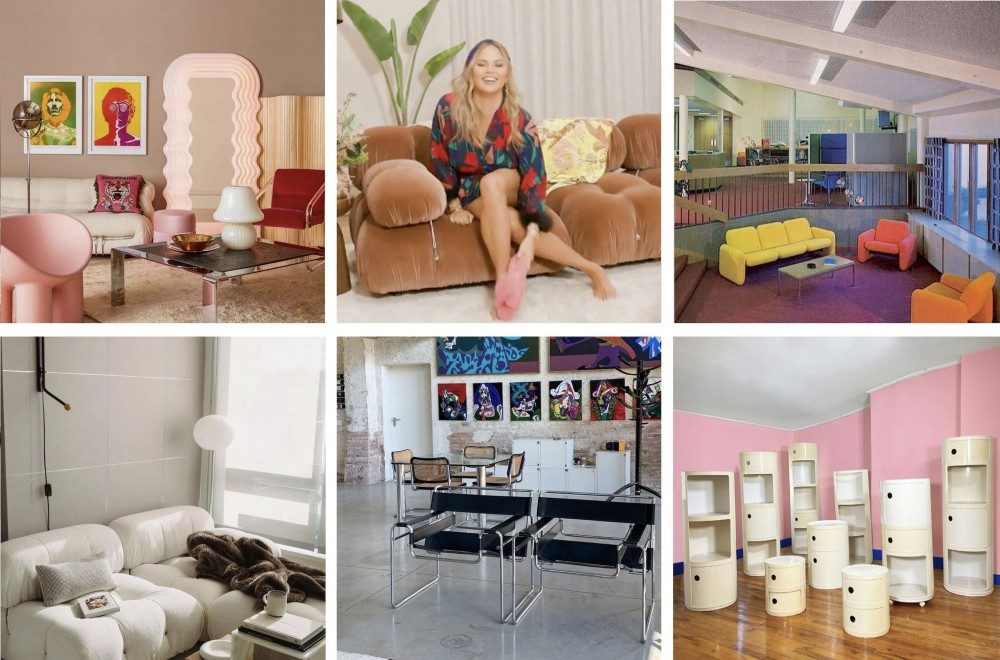

Basic Instincts
HOW INSTAGRAM IS CHANGING THE WAY WE DECORATE OUR HOMES

Today’s interior-design trends are not the culmination of some artistic commentary on contemporary society like Constructivism or Art Nouveau. They are a reflection of the online spaces we’re conditioned to spend time in — aesthetics that look good on social media.
If Postmodernism is the cultural logic of late capitalism, then Instagram is its apogee, a place where trends go to die, only to be reborn moments later. On platforms like Pinterest, once-rare images of over-designed loft spaces featuring cantilever chairs and low-slung leather sofas are scanned, uploaded, and funneled into Tumblr blogs and Instagram mood-board accounts like @__dreamspaces, @decorhardcore, and @casacalle_. In turn, these online curators create new desires for old aesthetics by turning reference photos into vessels for boosting engagement. Such accounts become producers, or rather, regurgitators of culture — inspiring consumers to mimic what they see online in their own homes as a means to earn likes. That’s why we see Mario Bellini’s bubbly, oversized Camaleonda sofa all over Instagram, and endless streams of teens lounging on knock-offs of Marcel Breuer’s Wassily chair on TikTok. In a hyper-visual world, the most relevant trends are those that stand out on a small screen.